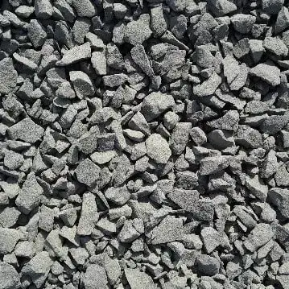

Stone Dust
40mm Crushed Stones

Choosing the right Crushed Stone is important as your dream project has to overcome the harshest weather conditions over the years. Samriddhi Crushed Stone provides compressive strength and bulk to concrete, thereby providing a durable construction for years to come.
Processed with Strength and Workability in mind, Samriddhi Crushed Stone has exceptional Mechanical Strength and solidity.
With just the right proportion of Samriddhi Crushed Stone Aggregates, the resultant concrete provides rigidity alongwith greatly-reduced shrinkage and cracking.
Welcome to Samriddhi Stone Crusher, your one-stop solution for Crushed Stone Aggregates. Today, with over 18 Years of industry leading experience, we're dedicated to giving you the very best commodities. With a keen focus on Quality, Workability and Strength, we strive to provide the best products at the best price!
We were founded by Mr. Trilok Chand Sahu, a plain-spoken man of principles who led us from the ground up to what we are today. We now serve customers throughout various districs of Madhya Pradesh. Principles of Trust & Transparency have helped us reach this level of business. We hope you enjoy our services as much as we enjoy offering them to you.
Making up the foundation of towns. Comprising up to 80% of a Concrete mix - providing robustness to Concrete, Samriddhi Crushed Stones continue to be the go-to choice for Aggregates.
GET STARTED